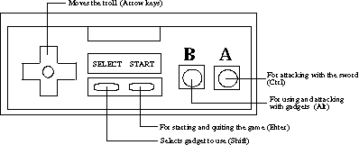

Keyboard Controls
Troll Bridge emulates a nintendo controller with the keyboard. The key combinations are similar to those used by Nintendo emulators so that they are familiar to the user. Eventually the keys are planned to be configurable but that option is not available at this time.

Joystick Controls
Only the Linux version currently supports the joystick and even then only two buttons are supported. The first button is B and the second corresponds to A. (The original joystick used for testing had a nintendo controller setup but the "A" button was the second button.)